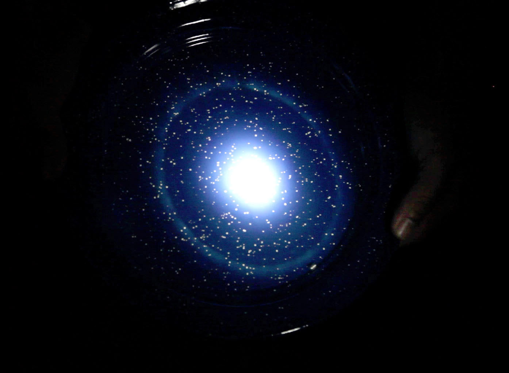
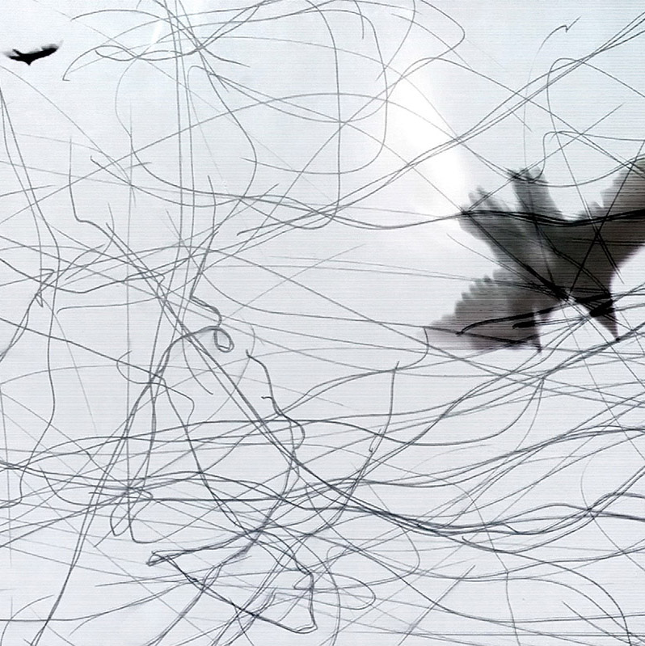
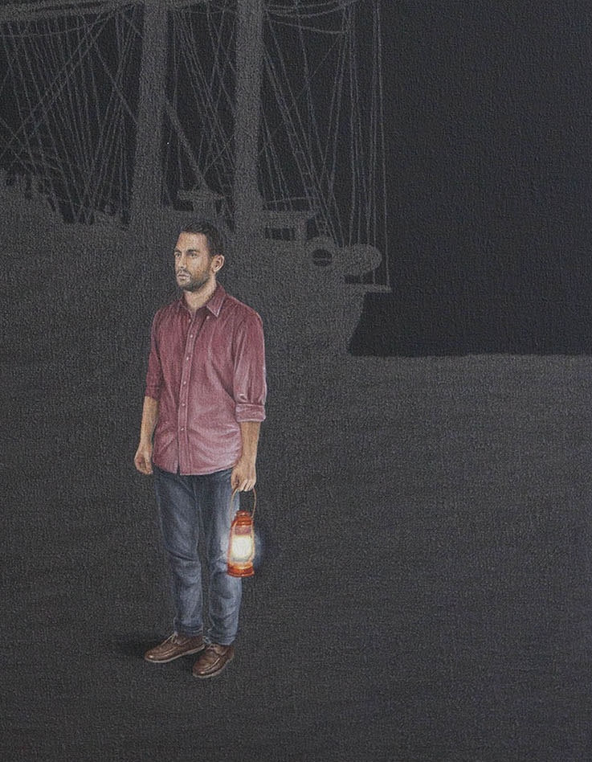

Ensayo para reconstruir un monumento
Revelar la memoria

Acerca del universo
Decepción
Ensayo para reconstruir un monumento
Reconstrucción sobre la distancia

Recordar el trayecto

Velar el tiempo
Ensayo para reconstruir un monumento
Revelar la memoria
Reconstrucción sobre la distancia
Reconstrucción sobre la distancia
Encontrar la noción
Montaña
Retorno
Reconstrucción sobre la distancia
Ensayo para reconstruir un monumento
Ensayo para reconstruir un monumento